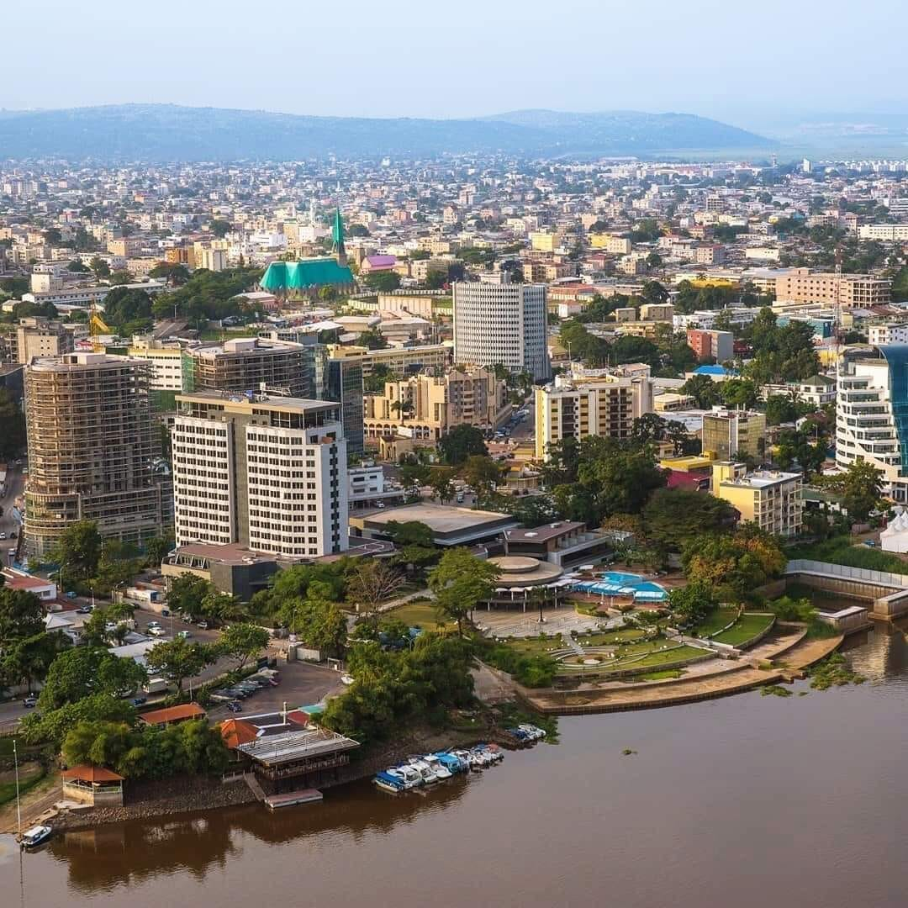

🇨🇬
République du Congo
Mes racinesC'est chez moi. Le Congo m'a appris l'importance de la famille et du partage. Ici, on ne vit jamais seul, tout se fait en communauté.
Ce que j'ai découvert
- La rumba et le soukous, toujours en fond sonore
- Les plats qu'on partage en famille
- L'entraide naturelle entre voisins